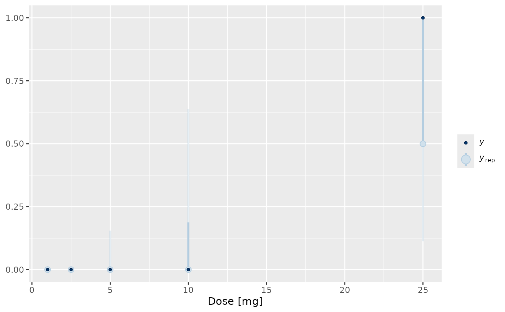

Simulation of the predictive distribution.
Value
Matrix of dimensions draws by nrow(newdata)
where row correspond to a draw of the posterior and each
column corresponds to a row in newdata. The columns are
labelled with the row.names of newdata.
Group and strata definitions
The groups and strata as defined when running the blrm_exnex
analysis cannot be changed at a later stage. As a result no
evaluations can be performed for groups which have not been present
in the data set used for running the analysis. However, it is
admissible to code the group (and/or stratum) column as a
factor which contains empty levels. These groups are thus
not contained in the fitting data set and they are assigned by
default to the first stratum. In addition priors must be setup for
these groups (and/or strata). These empty group (and/or strata)
levels are then allowed in subsequent evaluations. This enables the
evaluation of the hierarchical model in terms of representing a
prior for future groups.
Examples
## Setting up dummy sampling for fast execution of example
## Please use 4 chains and 100x more warmup & iter in practice
.user_mc_options <- options(
OncoBayes2.MC.warmup = 10, OncoBayes2.MC.iter = 20, OncoBayes2.MC.chains = 1,
OncoBayes2.MC.save_warmup = FALSE
)
example_model("single_agent", silent = TRUE)
#> Warning: The largest R-hat is NA, indicating chains have not mixed.
#> Running the chains for more iterations may help. See
#> https://mc-stan.org/misc/warnings.html#r-hat
#> Warning: Bulk Effective Samples Size (ESS) is too low, indicating posterior means and medians may be unreliable.
#> Running the chains for more iterations may help. See
#> https://mc-stan.org/misc/warnings.html#bulk-ess
#> Warning: Tail Effective Samples Size (ESS) is too low, indicating posterior variances and tail quantiles may be unreliable.
#> Running the chains for more iterations may help. See
#> https://mc-stan.org/misc/warnings.html#tail-ess
post_pred <- posterior_predict(blrmfit)
## turn DLT counts into DLT rates
post_pred_rate <- sweep(post_pred, 2, hist_SA$num_patients, "/")
library(bayesplot)
library(ggplot2)
## compare posterior predictive of the model for the response rates
## with observed data
with(
hist_SA,
ppc_intervals(num_toxicities / num_patients, post_pred_rate, x = drug_A, prob_outer = 0.95)
) +
xlab("Dose [mg]")

## Recover user set sampling defaults
options(.user_mc_options)